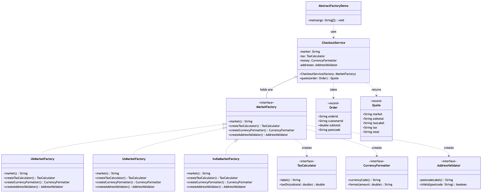
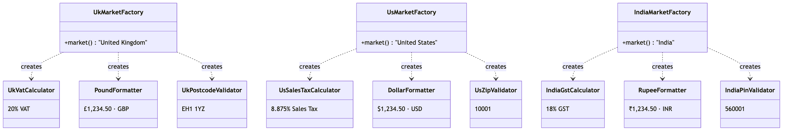

Abstract Factory Pattern
Demonstrates the Abstract Factory creational pattern (Gang of Four) using an e-commerce checkout that sells into three regional markets.
TaxCalculator,CurrencyFormatter,AddressValidator— the three abstract products. Every market needs one of each, and the three must agree.UkVatCalculator/PoundFormatter/UkPostcodeValidator,UsSalesTaxCalculator/DollarFormatter/UsZipValidator,IndiaGstCalculator/RupeeFormatter/IndiaPinValidator— the nine concrete products, arranged as three families.MarketFactory— the abstract factory. Three creation methods and nothing else. It never names a market or a product class.UkMarketFactory,UsMarketFactory,IndiaMarketFactory— the concrete factories. Each builds one complete, self-consistent family.CheckoutService— the client. It is handed one factory, collects the three products in its constructor, and then works entirely through interfaces.Order/Quote— immutable value objects in and out.AbstractFactoryDemo— runnable entry point that quotes the same order in all three markets, then shows a cross-market order being rejected.
Search CheckoutService for "UK", "US" or "India" and you find nothing. That is the point: a British tax rate cannot end up next to an American ZIP code, not because anything checks for it, but because no code exists that could produce it.
Run
./gradlew runWhich prints:
Checkout: United Kingdom order ORD-3001 to postcode EH1 1YZ
Checkout: VAT of £24.00 on £120.00
Checkout: total £144.00 GBP
Quote: Quote[market=United Kingdom, subtotal=£120.00, taxLabel=VAT, tax=£24.00, total=£144.00]
Checkout: United States order ORD-3001 to ZIP code 10001
Checkout: Sales Tax of $10.65 on $120.00
Checkout: total $130.65 USD
Quote: Quote[market=United States, subtotal=$120.00, taxLabel=Sales Tax, tax=$10.65, total=$130.65]
Checkout: India order ORD-3001 to PIN code 560001
Checkout: GST of ₹21.60 on ₹120.00
Checkout: total ₹141.60 INR
Quote: Quote[market=India, subtotal=₹120.00, taxLabel=GST, tax=₹21.60, total=₹141.60]
Rejected: "EH1 1YZ" is not a valid United States ZIP codeTest
./gradlew testLearning Material
Start here if you are new to the pattern — the docs are ordered as a learning path.
| Document | What it covers |
|---|---|
docs/prerequisites.md | What to know and install before you start |
docs/problem-statement.md | The problem the pattern solves, and why the naive approach hurts |
docs/abstract-factory-pattern-explained.md | The pattern itself, the code walked through, pitfalls, and comparisons |
docs/class-diagram.md | Static structure, and the three families |
docs/uml-diagram.md | Runtime call flow |
docs/animation.html | Animated, step-by-step walkthrough — open in a browser. Optional narration via the Narration button |
docs/session.md | A 60-minute guided session plan for teaching it |
docs/youtube.md | Title, description, chapters and thumbnail for publishing the video |
docs/thumbnail.png | The 1280×720 image to upload as the YouTube thumbnail |
docs/spec.md | The project specification — problem, code, video and publishing quality bar. Also as spec.html |
video/ | A narrated ~10 minute video, plus the script and build pipeline |

The pattern in one picture

The three families

Video
video/abstract-factory-pattern-explained.mp4 — 1080p, ~10 minutes, narrated. An audio-only version is alongside it. See video/README.md to rebuild or re-record it.
Related
The three factory patterns in this repository are best read in order:
../simple-factory-pattern— one helper class with aswitch, choosing one object. Not in the Gang of Four book, but where everyone starts.../factory-method-pattern— the choice moves into the type system. A creator writes a workflow with a hole in it, and subclasses fill the hole with one object each.- This project — the choice moves up a level again. One decision now produces a whole matching set of objects.
Simple Factory asks "which one?". Factory Method asks "which one — decided by my subclass?". Abstract Factory asks "which set?".